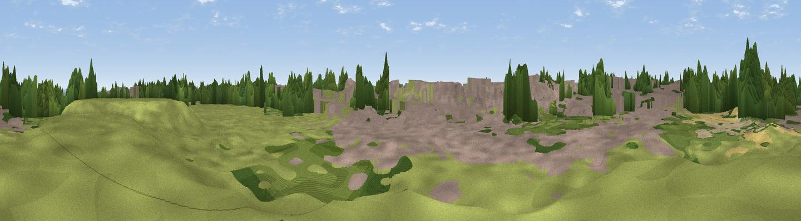

Blunsdon Hill
#36565 in England · top 65% of its area beats it · near Broad BlunsdonWhere it is
The exact computed spot (SU 14636 90211). Click the marker for map links.
The view, rendered

A 360° render of this exact spot computed from the terrain model, tree cover and land cover — summer colours, afternoon light, calibrated against photographs of famous viewpoints. Real trees, hedges and buildings will differ in detail.
The panorama
Grey silhouette: terrain skyline in each direction (720 bearings, Earth curvature and refraction included). Dashed green: skyline with trees (+15 m) and buildings (+8 m) as obstacles. Blue strip: how far the ground is visible on each bearing.
Where the view opens
Wedge length = distance to the farthest visible ground on that bearing (vegetation-aware). Rings at 10, 25 and 50 km.
What fills the view
34% built-up · 29% grassland · 21% cropland · 16% woodland
Angular shares of the visible panorama (visual magnitude), not map area. Landscape diversity 0.60 (0–1 Shannon).
Key numbers
More beautiful places nearby
The staircase of upgrades: each row has a higher view potential than everything closer. Driving times are estimates from straight-line distance, calibrated against real road routing — check an actual route before setting out.
| Place | Direction | Drive | Score |
|---|---|---|---|
| Viewpoint near Blunsdon St Andrew | WSW · 1 km | ~4 min | 40.6 |
| Viewpoint near Broad Blunsdon | NE · 1 km | ~4 min | 53.6 |
| Viewpoint near Chiseldon | SSE · 9 km | ~18 min | 55.9 |
| Viewpoint near Wroughton | S · 10 km | ~19 min | 61.4 |
| Viewpoint near Broad Town | SSW · 12 km | ~22 min | 65.8 |
| Charlbury Hill | SE · 12 km | ~23 min | 70.9 |
| Viewpoint near Liddington | SE · 12 km | ~23 min | 74.4 |
| Viewpoint near Woolstone | ESE · 16 km | ~28 min | 76.7 |
51.61054, -1.79004 · source: osm peak · position refined by local search. Computed location — check access rights before visiting.